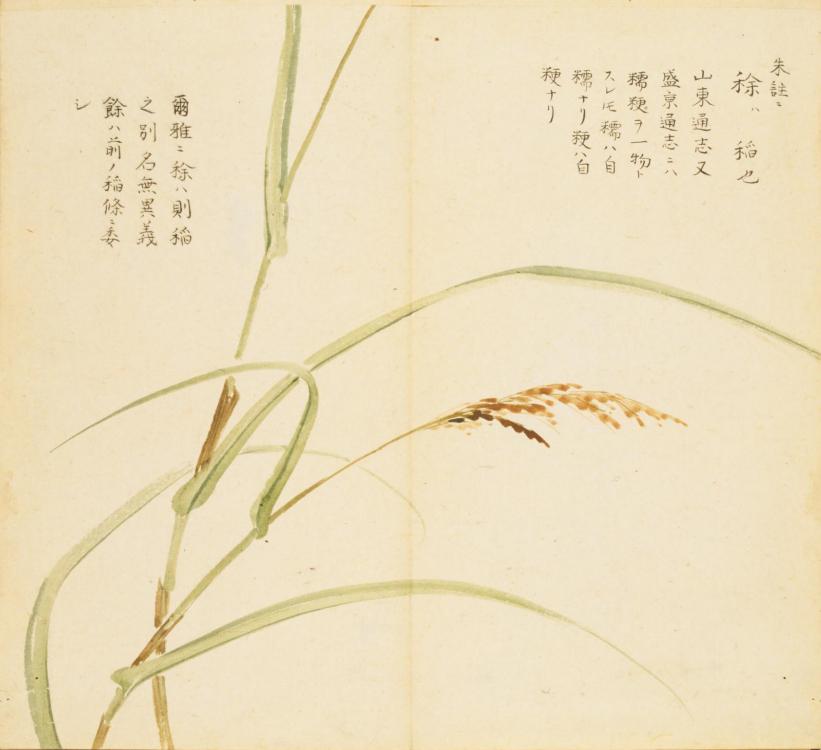
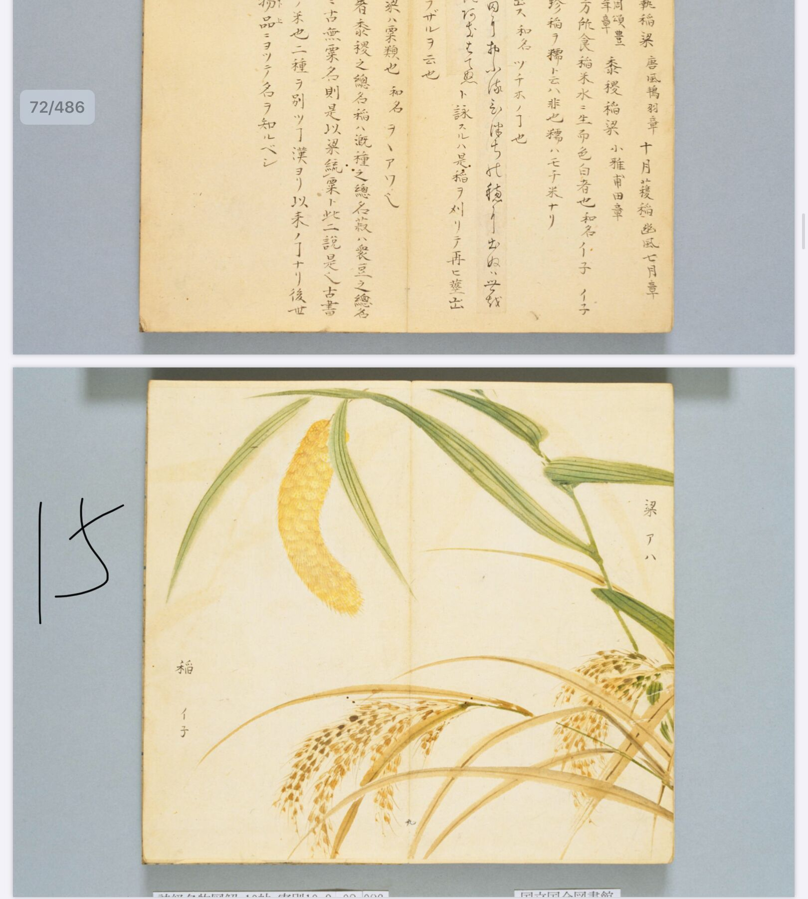
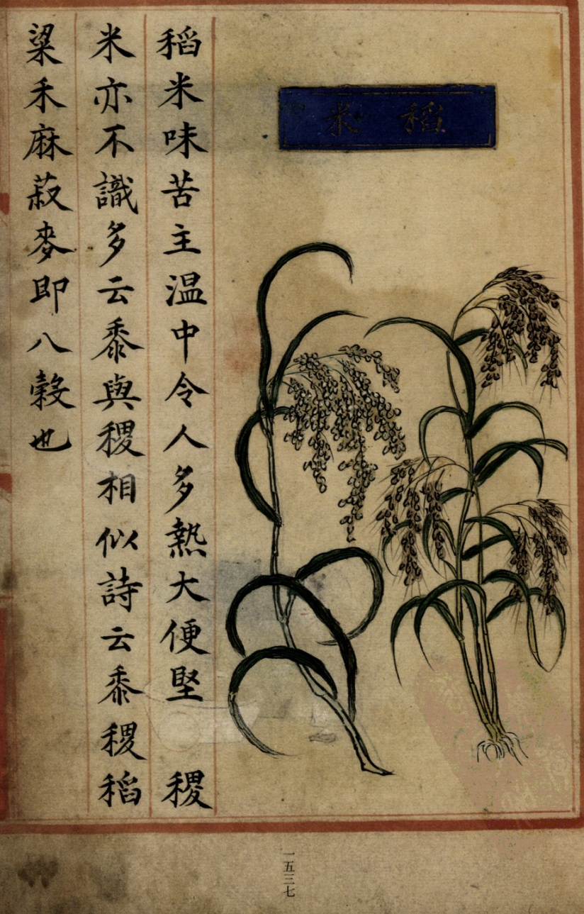
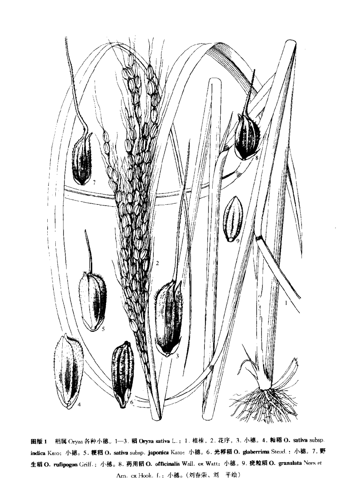

出现篇目
别名 稌、糯
古代记载 《本草纲目》
弘景曰∶道家方药有稻米、粳米俱用者，此则两物也。稻米白如霜，江东无此，故通呼粳为稻耳，不知色类复云何也？
恭曰∶稻者，穬谷之通名。《尔雅》云∶稌，稻也。粳者不粘之称，一曰籼。 胜之云∶三月种粳稻，四月种秫稻。即并稻也，陶谓为二，盖不可解也。
志曰∶此稻米即糯米也。其粒大小似秔米，细糠白如雪。今通呼秔、糯二谷为稻，所以惑之。按∶李含光《音义》引《字书》解粳字云∶稻也。秔字云∶稻属也，不粘。粢字云∶ 稻饼也。粢盖糯也。
禹锡曰∶《尔雅》云∶稌，稻。郭璞注云∶别二名也。今沛国呼 。周颂云∶丰年多黍多。《礼记》云∶牛宜稌。《幽风》云∶十月获稻。皆是一物也。《说文》云∶秔，稻属也。沛国谓稻为糯。《字林》云∶糯，粘稻也。秔，不粘稻也。 秔、糯甚相类，以粘不粘为异尔。当依《说文》以稻为糯。颜师古《刊谬正俗》云∶本草稻米，即今之糯米也。或通呼粳、糯为稻。孔子云∶食夫稻。周官有稻人。汉有稻田使者。并通指 、糯而言。所以后人混称，不知稻即糯也。
宗奭曰∶稻米，今造酒糯稻也。其性温，故可为酒。酒为阳，故多热。西域记∶天竺国土溽热，稻岁四熟，亦可验矣。
时珍曰∶糯稻，南方水田多种之。其性粘，可以酿酒，可以为粢，可以蒸糕，可以熬饧，可以炒食。其类亦多，其谷壳有红、白二色，或有毛，或无毛。其米亦有赤、白二色，赤者酒多糟少，一种粒白如霜，长三、四分者。《齐民要术》糯有九格、雉木、大黄、马首、虎皮、火色等名是矣。古人酿酒多用秫，故诸说论糯稻，往往费辩也。秫乃糯粟，见本条。
当代记载 《中国植物志》
稻（Oryza sativa），禾本科、稻属植物。一年生水生草本。秆直立，叶鞘松弛，无毛；叶舌披针形。圆锥花序大型疏展，分枝多，棱粗糙，成熟期向下弯垂。稻是亚洲热带广泛种植的重要谷物，我国南方为主要产稻区，北方各省均有栽种。

<细井徇>

<细井徇>

<补遗雷公炮制便览>

<中国植物志>